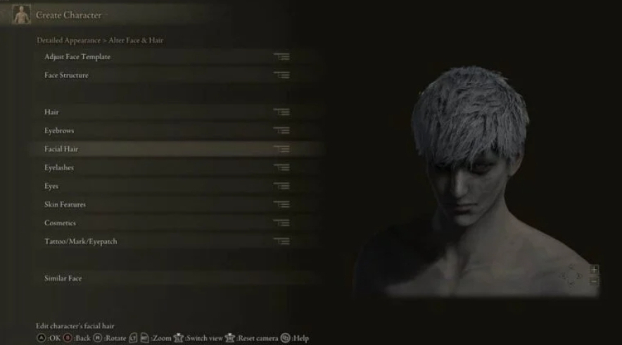
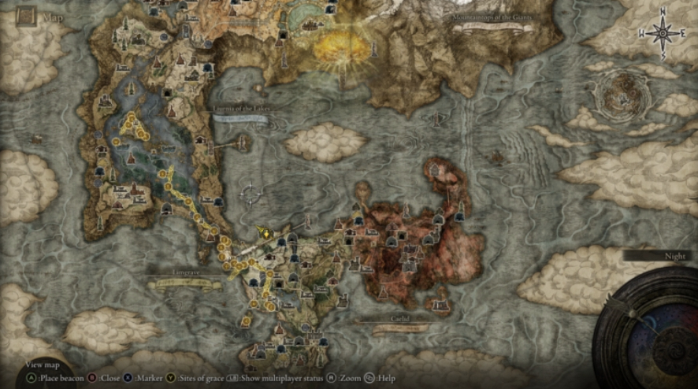

Нещодавно Elden Ring «забрала» головну ігрову премію – номінацію «Гра року» на The Game Awards, як і безліч інших премій від ігрової преси. Гра завоювала визнання не лише журналістів, а й простих гравців – зараз у Steam вона має 91% схвальних відгуків серед майже 450 000. Загалом до листопаду 2022 року, гра була продана накладом понад 16,5 мільйонів копій, посівши одну з найвищих сходинок продажів серед усіх ігор року. Ігри From Software довгий час лишалися доволі нішевою розвагою, але Elden Ring перевищила усі можливі очікування. Як це відбулося?
ВАЖЛИВО: у тексті та на скриншотах можливі спойлери.
Ти будеш народжуватися без ліку, знову і знову…
Головною фішкою серії Souls давно стало гнучке налаштування персонажа, як зовнішності, так і його навичок та спорядження – створення білдів, так обожнюване ком’юніті гри. Над редактором зовнішності в цей раз дуже постаралися – з’явилася купа нових параметрів, які дозволяють змінити навіть найдрібніші деталі, від кольору шкіри до висипів на обличчі. До того ж деякі події у грі тепер впливають на вигляд персонажа – наприклад, отримання сили дракона у Храмі драконового єднання робить очі персонажа більш схожими на очі драконів. Проте, ці ефекти можна прибрати використавши дзеркало, яке знаходиться у Фортеці Круглого Столу, габ-локації Elden Ring, де розташовані основні персонажі, на кшталт коваля та торговців. Якщо ж ви не любите багато часу проводити на екрані створення персонажів, для вас доступні кілька пресетів, які дозволяють швидко перейти до самої гри.
Початок вашої гри визначатиме обраний клас – вони майже не змінилися в порівнянні з Dark Souls 3 за своєю суттю, але перетерпіли багато змін зовнішньо. Так, окрім вже звичних гравцям лицаря, воїна (якого тепер звуть героєм), чарівника (астролога), в’язня, пілігрима та бродяги, з’явилися нові, на кшталт блукача чи самурая. Клас визначає ваші стартові навички та предмети, проте не накладає жодних подальших обмежень, лише стартові умови. Надалі ж ви зможете обирати будь-яке спорядження і навички для проходження.
А обирати є з чого: 309 одиниць зброї, 70 заклять, 101 молитва, 559 предметів одягу та броні доступні вашому персонажу в будь-яких комбінаціях. Для використання кожного предмету(окрім одягу) потрібно мати певний рівень відповідної характеристики: сили, спритності, інтелекту, віри або чар. Підвищувати їх можна двома шляхами – або за допомогою прокачування, або за допомогою предметів. Традиційно для серії, рівень в Elden Ring підвищується шляхом витрати рун на Місцях Благодаті – аналогу вогнищ з Souls або ідолів з Sekiro. Руни одночасно слугують і очками досвіду для підвищення рівня, і валютою для торгівлі – предмети можна як купувати за них, так і продавати. Усі руни втрачаються після смерті, але зберігаються у вигляді втраченої Благодаті на місці, де ви загинули. Ви можете їх підібрати, допоки не загинете знову – після цього вони втрачені назавжди. Левеллінг – ключ до перемоги над супротивниками та безмежний простір для експериментів, щоб зробити ваш досвід гри у Кільце Елдена по-справжньому унікальним.
Опале листя розповідає історію…
Окрім власних сценаристів студії, до написання сюжету гри було залучено Джорджа Мартіна – американського письменника, найбільше відомого завдяки своєму циклу «Пісня льоду та полум’я», за яким було створено «Гру престолів» – серіал, який не потребує представлення.. За словами самого Мартіна, насамперед він, разом з Хідетакою Міядзакі, креативним директором From Software, брав участь у створенні історії ігрового світу – подій, які відбулися до безпосередніх подій гри. В першу чергу, мова йде про Війни розколу.
Що ж відбувається у світі Кільця Елдена? Гравцеві доведеться взяти на себе роль одного з Потьмянілих – воїнів, колись давно вигнаних із Міжземелля разом із лордом Годфрі. Перед Потьмянілими стоїть мета зупинити війни між напівбогами, дітьми королеви Маріки, яка втілює собою Золотий Порядок – силу, що підтримує життя у світі за допомогою Дерева Ерд. Для цього їм доведеться відновити Кільце Елдена – магічний знак, який складається з Великих Рун, розділених між напівбогами, і повернути лад до світу. Проте, за традицією, ігри From Software мають декілька можливих закінчень, тому гравець може як повернути звичний стан речей до світу, так і докорінно його змінити. Вибір, як завжди, перед вами.

Неси слово по всіх усюдах…
Одним з найбільш приголомшливих нововведень Elden Ring в порівнянні з минулими іграми From Software став величезний відкритий світ. В будь-який момент гравець може обрати шлях до іншої локації, якщо забажає. Ігрова мапа поділена на дві зони – наземну та підземну, переміщення між якими відбувається за допомогою спеціальних підіймачів, які знаходяться в певних точках мапи. Інші переходи між цими частинами ігрового світу з’являються в ході проходження гри після перемоги над певними босами.
Наземна частина мапи поділена на сім основних регіонів, кожен з яких має власні підрегіони, та окремі локації, які хоч і приєднані до регіонів, але відмічені на карті додатково. До таких належать Академія Рая Лукарія, Королівська столиця Лейнделл та інші подібні місця. Кожне з них приховане від гравця, допоки він не ввійде до їхніх меж, але навіть після цього на мапі будуть зображені лише межі регіону – щоб дізнатися про цікаві місця, дороги та інші точки інтересу вам доведеться взаємодіяти зі спеціальними обелісками, на котрих зберігаються карти. На щастя, цей процес доводиться здійснювати лише один раз для всіх NG+, тобто, відкривши усі регіони за перше проходження, вам не доведеться заново збирати карти під час наступного.
Вітаємо чемпіонів на святі війни!
Я аплодую розробникам стоячи. Настільки пафосних, багаторівневих та епічних босів у минулих іграх я ще не пам’ятаю. Робота над кожним з них, починаючи від найпершого Маргітта до фінального… Не так важливо кого, пророблена колосальна. Майже кожен бос має певні цікаві особливості та вразливі місця, які допоможуть Потьмянілому впоратися з ним. Пам’ятаєте про кайдани? Ну так ось – використання цього предмета проти боса Маргітт, Лихий Передвісник, дозволяє повністю знерухомити його на кілька секунд, три рази на бій. А ще вони знадобляться вам в іншому бою, значно пізніше у грі. Як завжди, у кожного боса також є вразливості та супротив певним модифікаторам шкоди, незмінні для серії Souls – це мороз, блискавка, полум’я, отрута, кровотеча, священна шкода та магія. Існують, щоправда, і нові – це криваве полум’я Безплотної Матері, яке одночасно заподіює шкоду як від вогню, так і від кровотечі, і червона гниль – сила Маленії, Клинка Мікелли, що замінила звичний ефект токсину. Вона наносить більше шкоди, ніж звичайна отрута, і триває набагато довше.
Босів у грі ДУЖЕ багато. В основному, вони поділяються на три типи: світові боси, боси-великі вороги та легенди. До останніх двох категорій належать усього 30 босів, всі інші – до світових. За усіх унікальних босів ви отримаєте спогади – спеціальний предмет, який можна обміняти у прислужниці Двох Пальців у Фортеці Круглого Столу на унікальну зброю чи закляття, зазвичай такі ж, як використовував супротивник. Ці спогади можна дублювати у Мандрівних мавзолеях – спеціальних гробницях, які блукають світом в межах певного регіону. Для доступу до них треба зламати нарости у вигляді черепів, які знаходяться або на ногах істоти, або на верхівці, навколо самої будівлі. Але будьте обережні – мавзолеї не беззахисні та цілком можуть розчавити вас невдалим кроком або потужним стрибком. В більшості локацій їх також захищають різноманітні вороги.
Про босів дуже важко розповідати без спойлерів, адже окрім показаних у стартовому ролику володарів Великих Рун, про жодного з них ви не дізнаєтеся, допоки не зустрінетеся в бою. А здивувати там є чому – від величезних заряджених блискавками драконів до давніх космічних сутностей, в десятки разів більших за головного героя. Для перемоги над кожним із них вам доведеться докласти максимум зусиль і вправно розпоряджатися своїм арсеналом.
Оцінка
9/10Elden Ring – величезний стрибок вперед для From Software. Після співпраці з Activision над Sekiro, японські розробники зрозуміли, що можна робити не просто пафосні ігри для прихильників – навіть таку нішеву і непросту гру можна перетворити на блокбастер, обожнюваний як пресою, так і гравцями. Звісно, можна багато розповідати про дрібні нюанси гри, але, як на мене, багато з них є суб’єктивними, а ті, які справді заважають (як значні просадки FPS у деяких локаціях), не псують враження в цілому від цієї величної гри. До речі, гра досі підтримується контентом. Наприклад, зовсім недавно вийшло безплатне оновлення, яке додало PVP-колізеї для чесних боїв.